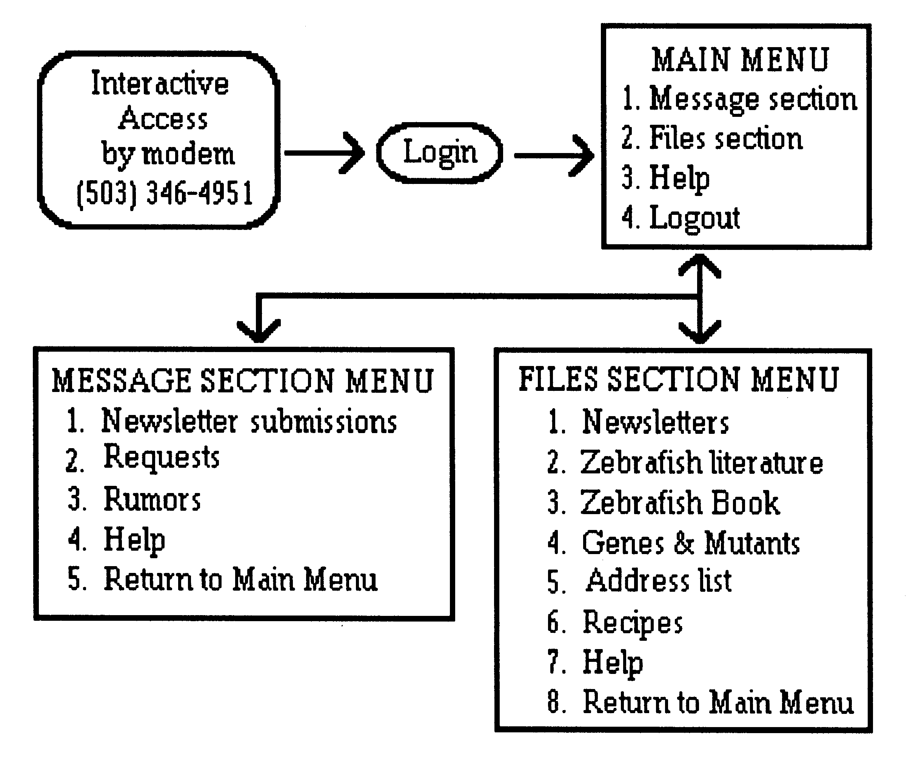

The Zebrafish Bulletin Board is up and running in Eugene. The Bulletin Board provides on-line access to a variety of services including back issues of the Monitor, updated chapters from the Zebrafish Book: A Laboratory Manual, contributed recipes, results, lists of mutants, genes, antibodies, address lists, etc. It also provides a Message Section which allows users to leave and get messages or to make specific or general requests for information.
Presently, you can access the Bulletin Board with a computer modem by calling (503)-346-4951. Hopefully, a toll-free 800 number will be available in the future.
The Bulletin Board answers the phone and responds with a greeting which provides information for logging on to the system. Once logged on, the user is provided with the main menu which offers a choice of either the Message Section or File Section.
The purpose of the Message Section is to stimulate a dialogue between users. This section offers a menu of various types of conferences. Once a conference is selected, the user can read messages, add a message, reply to a specific message, or scan all the messages for a specific text string.
The Files Section is designed to provide a means for users to submit articles for the Monitorand to share data. This section offers a menu of possible file areas. Once an area is selected, the user can look at the directory of files in that area, search for a specific file, or send in or get a specific file.
The system is simple to use and we are eager to make it even simpler. Suggestions and comments are welcome!
As before, the email system is still available for off-line requests. Write to:
"Zebrafish@uoneuro.uoregon.edu".
******************************************************************************
By Patricia Culp, Christiane Nüsslein-Volhard, and Nancy Hopkins
With the goal of developing techniques for DNA insertional mutagenesis in zebrafish, we established procedures for rapidly obtaining and injecting large numbers of fertilized eggs. Using either of two plasmid constructs, we injected uncut DNA into fertilized eggs at the one- or two-cell stage. Injected eggs were raised to sexual maturity and frequency of transgenic founder fish determined by pair mating the fish and testing DNA extracted from pools of their 16-hour-old offspring using PCR and then Southern analysis. Eggs injected with one of two different plasmids yielded no transgenic fish, but 7-23% (18/114 overall) of the eggs injected with the other transmitted the injected sequences to their offspring (F1). Of seven lines studied further, all were able to pass the foreign DNA sequences to the next F2) generation. Inheritance in the F2 was Mendelian in the four lines tested. PCR and Southern analysis indicated that the plasmid sequences were present in multiple copies, probably tandemly arranged. Two founder fish carried more than one independent integration of the plasmid sequences. The line studied in more detail was a mosaic carrying two independently segregating copies of the transgene in one germ cell, and another integration in another germline precursor cell. The ability to obtain and inject large numbers of zebrafish eggs combined with a high frequency of germline integration may be steps towards the goal of being able to perform insertional mutagenesis with this organism. In press, PNAS.
******************************************************************************
By Sherry O'Shea & Monte Westerfield, Institute of Neuroscience, University of Oregon, Eugene, OR 97403
2. Transfer the embryos to cold Ringer's with EDTA and PMSF. Remove yolks by triturating with a glass pipette that has been drawn out to have a tip diameter approximately the size of the yolk.
3. Transfer the dechorionated, deyolked embryos to fresh, cold Ringer's solution and rinse 2x.
4. Embryos can be frozen in liquid nitrogen and stored at -70C at this point by
transferring to a microcentrifuge tube and removing as much liquid as possible.
Solutions:
Protease: 5 mg/ml pronase diluted to 1 mg/ml in embryo medium
PMSF: Stock - 100 mM PMSF in isopropanol. Add 30 µl of stock/10 ml Ringer's (final conc. 0.3 mM PMSF) immediately before use.
EDTA: Stock - 10 mM EDTA, pH 7.0. Add 1 ml of stock/10 ml Ringer's (final conc. 1 mM EDTA)
Ringer's: (recipe in Zebrafish Book)
II. Preparation of gel sample
1. Remove from freezer & thaw frozen, dechorioinated, deyolked fish.
2. Microfuge for 1-2 minutes to pellet.
3. Remove excess liquid.
4. Add 150-200 µl sample buffer (for example, ~50-100 3 day embryos or 100-150 24 h embryos; this will yield enough for a 1.5 cm curtain or four 0.4 cm lanes of about 25-30 µl each).
5. Homogenize with microfuge pestle until uniform in consistency.
6. Repeat step 5 until sample is no longer stringy.
7. Boil 5 minutes in a water bath.
8. Microfuge, 1-2 minutes.
9. Transfer supernatant to a new microfuge tube. Discard pellet or add more sample buffer and homogenize again if significant pellet remains.
10. Freeze at -70C or run immediately on gel.
1.0 ml glycerol
0.5 ml -mercaptoethanol
1.75 ml 20% SDS
6.12 ml H2O
(10 ml total)
Store at -20C in aliquots.
1. Homogenize dechorionated, deyolked embryos in extraction buffer.
2. Incubate overnight at 4C.
3. Centrifuge 20 min at 5000 x g.
4. Remove supernatant.
2% Triton-X 100
1 mM PMSF
1 mM aprotinin
1 mM leupeptin
1 mM trypsin inhibitor
2. Decant the blocking solution and add TTBS to the membrane. Wash for 10 minutes with gentle agitation at RT.
3. Decant the TTBS and add the 1 antibody diluted in 1% dried milk in TTBS. Incubate 4 hours at RT (or over night at 4C) with gentle agitation.
4. Remove the unbound 1 antibody by washing 2x 5 minutes in TTBS.
5. Add alkaline-phosphatase conjugated 2 antibody solution (diluted 1:3000 in 1% dried milk in TTBS). Incubate 1-2 hours at RT with gentle agitation.
6. Wash membrane 2x 5 minutes in TTBS and then, just prior to color development, 1x 5 minutes in TBS to remove the Tween-20.
7. Immerse membrane in color development solution. Proteins present at 100 ng or greater will immediately become visible as purple bands. Lower amounts will take longer, but should be visible within 30 minutes. Staining can continue up to 4 hr.
8. Rinse membrane 4x 5 minutes in dH2O.
500 mM NaCl
500 mM NaCl, 0.05% Tween-20
33 µl BCIP stock
10 ml color development buffer
Both NBT and BCIP stocks are 50 mg/ml in DMF
4.2 g NaHCO3
500 ml d2O
******************************************************************************
By Uwe Strahle
1. Transfer embryo(s) in chorion into an Eppendorf tube and remove as much liquid as possible with a drawn-out pasteur pipette.
2. Add 50 µl (for 1 embryo or 100 µl for 25) of 1x PCR buffer supplemented with 0.3% Tween-20 and 0.3% NP-40. The PCR buffer does not seem to be critical, so it can be adapted to the needs of the polymerase you use. The Taq polymerase (Perkin Elmer Cetus) and the new thermostable polymerase (Replinase) from NEN work well with this concentration of detergent. Other polymerases have not been tested.
3. Incubate at 98C for 5 minutes.
4. Add 5 µl (for 1 embryo or 10 µl for 25) 10 mg/ml Proteinase K.
5. Incubate at 55C for at least 30 minutes to over night.
6. Heat-inactivate the Proteinase K for 5-10 minutes at 98C.
7. Use 10 µl for amplification in a 50 µl reaction.